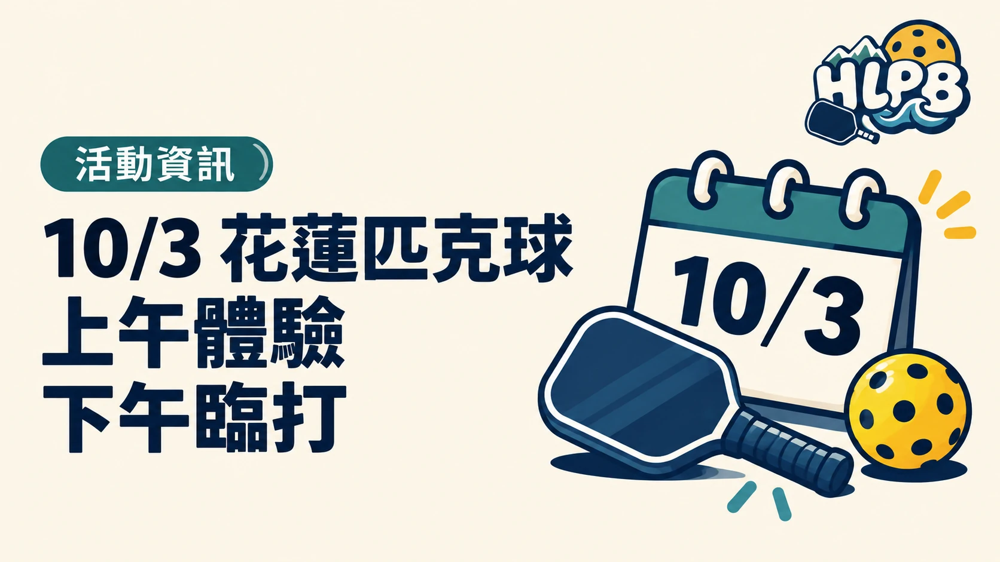
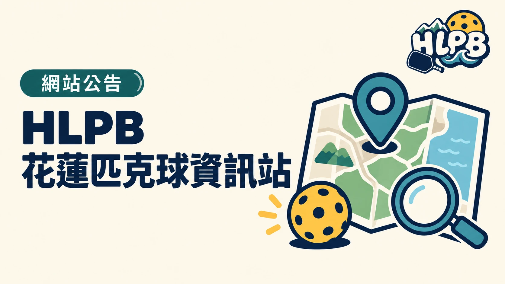

顯示方式
新聞報導
瑞穗天合城堡大廳設匹克球場，攜手 CIPP 舉辦快閃活動
瑞穗天合將城堡大廳設為期間限定匹克球場，TSNA 報導酒店與 CIPP 於 9 月 21 日舉辦開幕及邀請賽。酒店官網另列出場地使用規定，僅限住宿旅客登記使用。
查看完整資訊新聞報導
大陳二村匹克球場改建：從閒置籃球場到社區運動空間
洄瀾網 3 月 10 日報導，大陳二村活動中心旁的閒置籃球場改建為匹克球場，規劃固定球網與彈性壓克力地坪。本文記錄場地建置過程，現況另以球場列表為準。
查看完整資訊新聞報導
花蓮市暑期匹克球推廣營：學童與銀髮族同場學習
洄瀾網報導，花蓮市暑期匹克球推廣營於 7 月 13 日舉行開幕活動，近 30 位學員參與，年齡從國小學童到六十多歲，由林融帶領握拍、擊球與對打練習。
查看完整資訊新聞報導
新住民家庭匹克球體驗：簡君翰帶領握拍與對打
移民署花蓮縣服務站舉辦新住民家庭匹克球體驗，邀請簡君翰教學。慈善新聞網 7 月 31 日報導，來自不同國家的家庭透過握拍、發球與對打練習，一起認識匹克球。
查看完整資訊新聞報導
新織永續發展協會與匹克球協會辦理親子推廣活動
花蓮最速報於 2025 年 12 月 8 日報導，花蓮縣匹克球協會與新織永續發展協會在東華附小辦理推廣活動，讓親子家庭與會員一起接觸匹克球。
查看完整資訊新聞報導
台灣線報報導：首屆花東快速盃匹克球賽在玉里登場
報導記錄 9 月 19 日在花蓮玉里舉行的首屆花東快速盃，並提及花蓮縣匹克球協會與在地工作人員籌辦賽事，讓不同地區球友在花蓮南區交流。
查看完整資訊新聞報導
花蓮新聞網報導：Pickle Boat 帶偏鄉兒童體驗匹克球
報導記錄 9 月 19 日在宜昌國中活動中心舉辦的公益體驗。百達醫療與世界和平會合作，讓花蓮偏鄉兒童接觸匹克球，並提供球具延續練習。
查看完整資訊新聞報導
聯合報報導：大陳二村匹克球場完成圍網
聯合報 9 月 21 日報導，大陳二村匹克球場周邊圍網已於 9 月完工。報導也整理球友對燈桿位置與休息空間的改善建議；後續措施仍待市公所評估，並非已完成的新設施。
查看完整資訊比賽資訊
115 年洄瀾盃匹克球項目：賽事資訊查詢入口
2026 年 11 月 8 日（星期日）於花蓮縣立中正體育館舉行。海報列有機關團體、公開、一般、樂活、新手與國小組；組別資格、賽程及報名狀態請以賽事查詢系統為準。
查看完整資訊
活動資訊
10/3 花蓮匹克球活動資訊：上午體驗、下午臨打
10 月 3 日（星期六）花蓮縣立體育館上午 09:30–12:00 有免費匹克球體驗，來源頁列 6 至 65 歲可報名；下午 13:30–16:30 為每人 250 元的臨打，限額 30 人，需自備球拍與室內運動鞋。兩場活動請分別查看原始頁面確認名額。
查看完整資訊